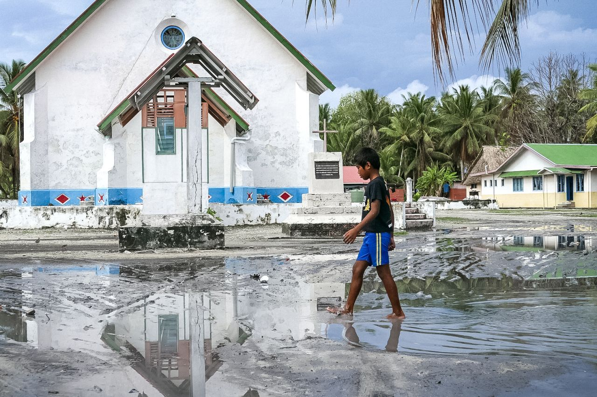
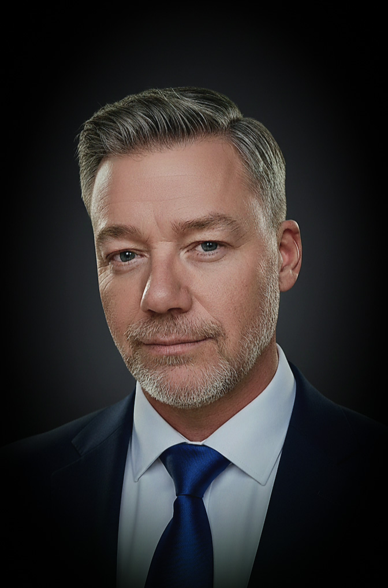

An open-source blueprint for sovereignty, resilience, and cultural continuity — applied first in Tuvalu.
This is not a plan for escape.
It is a plan for staying with dignity.
The Sovereign Vision Project reimagines what it means to live, thrive, and endure on an atoll. We are building a network of regenerative systems — water, food, energy, waste, and communication — designed to float, adapt, and honour both ancestral wisdom and planetary innovation.

Funafuti Atoll, Tuvalu — the most vulnerable nation on earth, and the most compelling test case for sovereign resilience.
"If resilience can be proven here, it can be proven anywhere."
Tuvalu is not just at risk — it is the world in miniature, and the right place to begin. This island nation stands at the frontlines of the climate crisis and the forefront of sovereign possibility. With rising seas threatening its very soil, Tuvalu shows what is at stake for all coastal and vulnerable communities. But Tuvalu is not a victim. It is a teacher.
Tuvalu has unique strengths that make it the perfect seedbed for regenerative living: peaceful, educated, Commonwealth-connected, open to innovation, and uncorrupted by over-industrialisation. Its small scale and trust-based communities mean every system deployed here can be tested, refined, and stewarded directly by the people.
"The climate crisis is not theoretical for small island nations — it is existential. Rising sea levels, saltwater intrusion, unreliable power, and imported food dependency are not distant threats; they are daily realities."
Every system — energy, water, food, waste, comms, AI — is independently deployable. No single point of failure. Each module strengthens the whole.
Tuvaluan language, ritual, and ceremony are embedded in every system. Culture is not an afterthought — it is the adoption and legitimacy mechanism.
Four phased stages from monitoring-only through full civic automation. No automation proceeds without explicit community consent at each threshold.
Guardian is a decentralised civic AI oversight framework — monitoring energy, water, food, and communications in real time, enforcing community ethics, and maintaining transparent audit trails every citizen can query. Arbor is every Tuvaluan's lifelong civic companion. Both run fully offline, on-island. No data leaves the island.
These are genuine engineering challenges we are working through. If you have expertise in any of these areas, we want to hear from you.
Reach Out to the Team
"I have worked on reconstruction at a national scale after major wars — Iraq, Afghanistan. I saw billions spent on infrastructure with no cultural respect and no long-term plan. Within months, those systems failed."
Sovereign Vision was born to avoid those mistakes. Here, technology is simple, open, and locally maintained. Culture and ritual are not afterthoughts — they are the foundation. Guardian and Arbor act as training partners, helping people preserve what is sacred while managing systems they fully control.
The goal is sovereignty, not dependency. Continuity, not collapse. No one built this before because the gap between technical skill and cultural patience is rarely bridged — and the specific combination of background and circumstances to build something like this at Tuvalu's scale almost never exists in one project team. This project is open. That is a deliberate values statement.
Every system in the Sovereign Vision is modular, documented, and released under the Civic Commons License v1.0. Any climate-vulnerable nation can take this blueprint, adapt it to their context, and deploy it — without permission, without licensing fees, and without dependency on the original project team.
We invite engineers, climate advocates, island governments, and aligned institutions to join us. Whether you bring technical expertise, policy access, cultural knowledge, or funding — we want to hear from you.